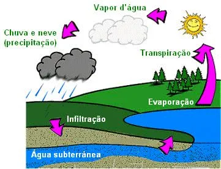

CICLO DA ÁGUA
O ciclo da água é o permanente processo de transformação da água na natureza, passando de um estado para outro (líquido, sólido ou gasoso).
A essa transformação e circulação da água dá-se o nome de ciclo da água ou ciclo hidrológico, que se desenvolve através dos processos de evaporação, condensação, precipitação, infiltração e transpiração.
A água, indispensável para a manutenção da vida, é encontrada na natureza e está distribuída nos rios, lagos, mares, oceanos e em camadas subterrâneas do solo ou em geleiras.
O ciclo da água na natureza é fundamental para a manutenção da vida no planeta Terra, visto que vai determinar a variação climática e interferir no nível dos rios, lagos, mares, oceanos.
Ciclo da Água na Natureza
